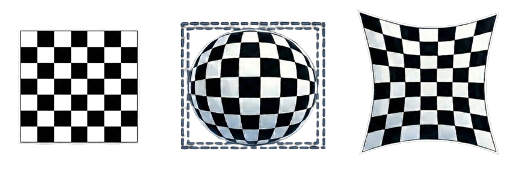
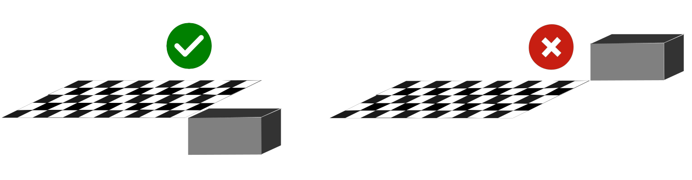
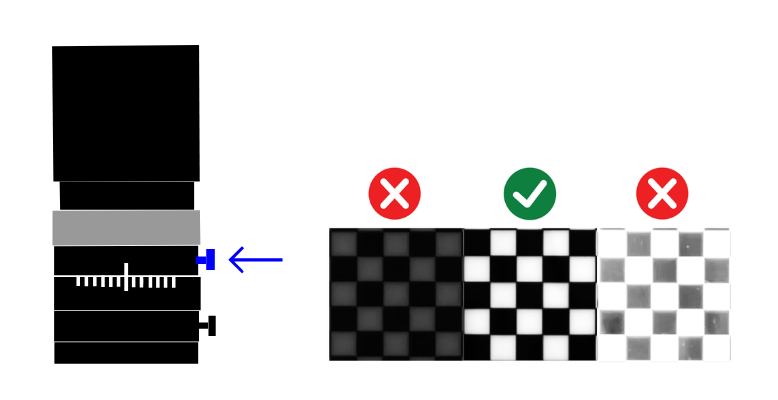
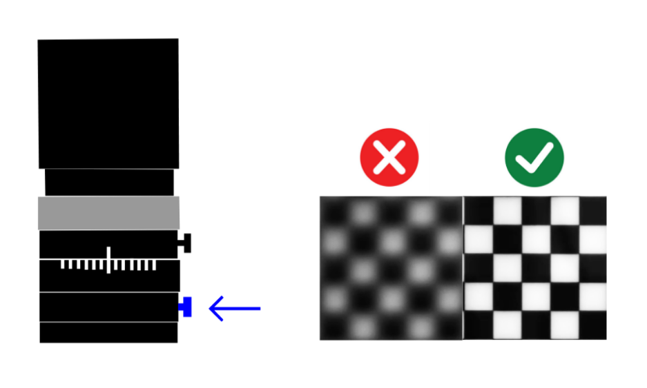
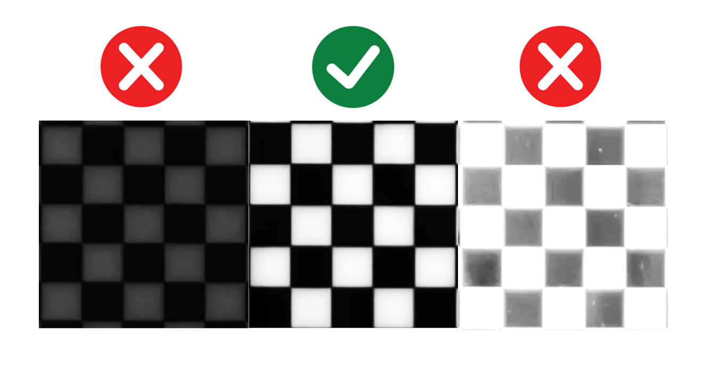
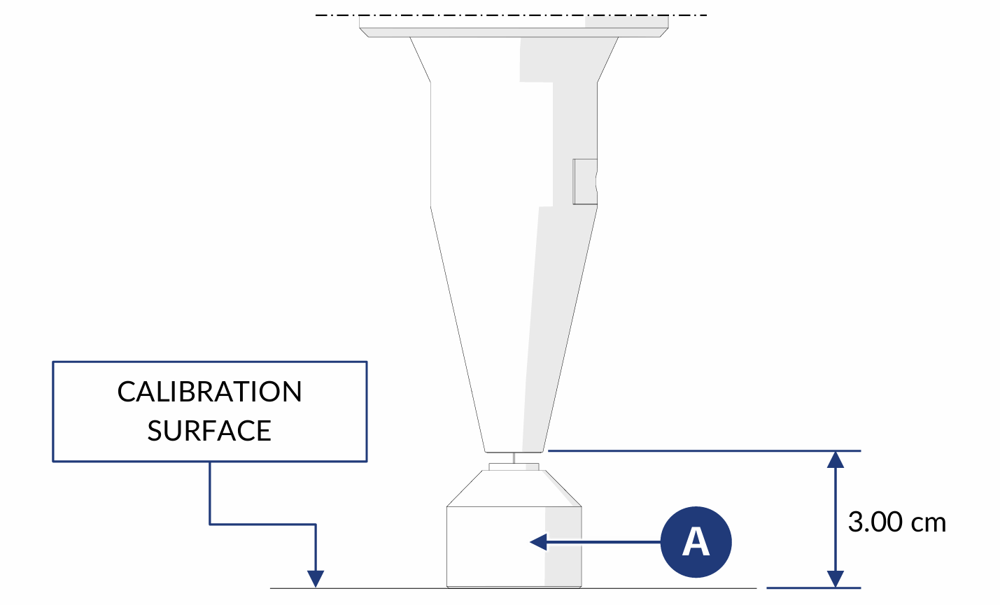

Camera Calibration#
Calibration is the crucial step that establishes the exact geometric relationship between the real world, coordinates in millimeters, and the image acquired by the camera, coordinates in pixels. Without accurate calibration, the precision of the picking system is compromised, making the entire application unreliable.
Warning
Fundamental prerequisite
Before proceeding with calibration, make sure that all hardware setup steps have been completed correctly:
Calibration must be repeated every time the position of the camera and or the robot is changed.
Tip
It is not necessary to recalibrate if only the position of the FlexiBowl is changed.
Why calibration is necessary#
Calibration is necessary because every sensor and lens combination introduces specific alterations into the image. Its main goal is to correct these distortions.
Types of optical distortion#
{kind=link}

Examples of optical distortion: no distortion, left, barrel distortion, center, and pincushion distortion, right#
Step 1: Calibration grid#
Error
Make sure that:
The backlight is on,
SETUP > FlexiBowl Setup > Config FlexiBowl > Light ONThe TopLight is off
The dedicated ARS calibration grid must be positioned on the FlexiBowl:
0 |
If present, remove the diverters mounted on the FlexiBowl. |
1 |
Loosen the four screws of the central FlexiBowl flange |
2 |
Rotate the central flange slightly counterclockwise and remove it |
3 |
Carefully lift and remove the surface |
4 |
Position the ARS grid on the FlexiBowl, aligning the positioning pins with the predefined holes |

Correct positioning of the ARS calibration grid on the FlexiBowl#
Attention
The calibration grid must be positioned at the same height as the object used in the application.
For this reason, the grid is supplied with spacers that must be inserted in the grid pins before installation on the FlexiBowl. The spacers are used to raise the grid to the same level as the part height, ensuring accurate calibration.

{kind=link}

Step 2: Basic adjustments#
5 |
Open the Camera SETUP section from SETUP |
6 |
Click the Config Camera button for the corresponding camera |
7 |
Click EXPERT in the Camera FLB page |
8 |
Set the camera to live display mode Before adjusting the aperture, activate continuous display mode:
|
9 |
Set the iris aperture
 |
10 |
Adjust camera focus manually
 |
11 |
Click Back |
{kind=link}
{kind=link}
Warning
Pay attention to depth of field
Focus must guarantee sharpness over the entire FlexiBowl surface, not only in the center.
If the center is sharp but the edges are blurred:
Verify that the optics are clean
Verify that the working distance is correct
Verify that the camera is perfectly parallel to the plate
Close the iris slightly to increase depth of field
If the problem persists, the mechanical installation of the camera may need to be reviewed.
Error
If, by clicking RUN multiple times, even once you see a completely blue screen, refer to Camera Calibration Troubleshooting
12 |
Adjust camera exposure
|
13 |
Click NEXT |
{kind=link}

Example of correct exposure: high contrast, well-defined pattern, no burned areas#
Tip
Exposure optimization
The higher the time, the more light enters the optics
Time too short: dark image, pattern poorly visible
Time too long: overexposed image, loss of detail
Optimal time: maximum contrast without saturation
Step 3: Camera calibration#
14 |
Verify that the grid is centered, sharp, and fully visible before acquiring the calibration image. |
15 |
Click Grab Image Calib to capture a photo of the calibration grid. Visually verify that:
|
16 |
Set both Tile Size X and Tile Size Y to |
17 |
Click Calibrate to perform calibration |
18 |
Evaluate calibration quality The Result Calibration parameter will return a value: 🟢 Excellent, Green: excellent calibration, optimal precision. 🟠 Acceptable, Orange: acceptable calibration, good precision but not optimal. 🔴 Bad, Red: poor calibration, insufficient precision, must be repeated. Important Accept only Excellent calibrations. Any other result compromises the behavior of the entire application. |
Note
Acceptance criterion
A satisfactory result requires correct aperture setting, correct focus, and the best exposure setting for the application.
Warning
Errors during calculation
If the calibration calculation fails:
Possible causes:
Pattern not detected, image too dark or too bright
Grid squares partially obscured
Excessive distortion, camera too close or too far
Wrong Tile Size entered
Solution:
Verify and improve acquired image quality
Make sure the entire grid is visible and well illuminated
Verify the Tile Size value
Repeat image acquisition, Grab Image, and try again
When calibration must be repeated#
Recalibrate when: |
First system setup, mandatory. After changing the camera position. After moving the robot. If systematic picking errors are detected. |
Recalibration is not necessary when: |
If the part type changes while FlexiBowl and camera remain the same. If focus or aperture of the lens is adjusted. If only the software recipe changes. If only recognition parameters are adjusted. If robot programs are updated. |
Robot Calibration#
Step 4: Laser mounting#
19 |
Once excellent calibration quality has been achieved, click NEXT. |
20 |
Mount the Laser Tool with its dedicated support |
21 |
Position the Spacer Bracket (A) under the laser |
22 |
Lower the laser to the level of Spacer (A), so the laser is positioned exactly  |
23 |
Remove the Spacer Bracket |
24 |
Turn on the laser |
{kind=link}
Step 5: Define a 3-point plane#
25 |
Move the laser to the origin point |
26 |
Move the laser to the end point of the X axis |
27 |
Move the laser to the end point of the Y axis |
Step 6: Verify robot trajectory#
28 |
Bring the laser back to the origin point |
29 |
Move the robot from its teach pendant along the X and Y axes |
30 |
Verify that the correct trajectory is followed: when moving only along X and Y, the robot must correctly follow the grid lines |
31 |
Click YES |
Step 7: Save the base recipe#
32 |
Click Recipes |
33 |
Verify that the recipe containing all setup steps and calibration is selected in the left menu, then click Save Recipe |
34 |
This allows all completed steps to be stored separately, providing a base for all future recipes that will contain the various models for the calibrated system |
35 |
To continue with model creation, duplicate the base recipe, rename it as desired, and click Edit Recipe. A page with the list of available models will open |
Common problems during calibration#
Pattern not detected#
Warning
Error: “Unable to detect calibration pattern”
Cause: the software cannot identify the grid pattern.
Solutions:
Increase contrast by adjusting exposure or illumination
Verify that the entire grid is visible in the image
Improve focus
Clean the grid surface, dust or fingerprints may interfere
Calibration always “Bad” or “Acceptable”#
Warning
Insufficient calibration quality
If calibration remains below Excellent despite adjustments:
Verify camera-FlexiBowl working distance, it must match the calculated one
Check that the camera is parallel to the FlexiBowl plane and perfectly horizontal
Make sure the camera is stable, no vibrations during acquisition
Verify that the lens is fully screwed in
If the problem persists, there may be a mechanical installation issue. Review Mechanical Installation.